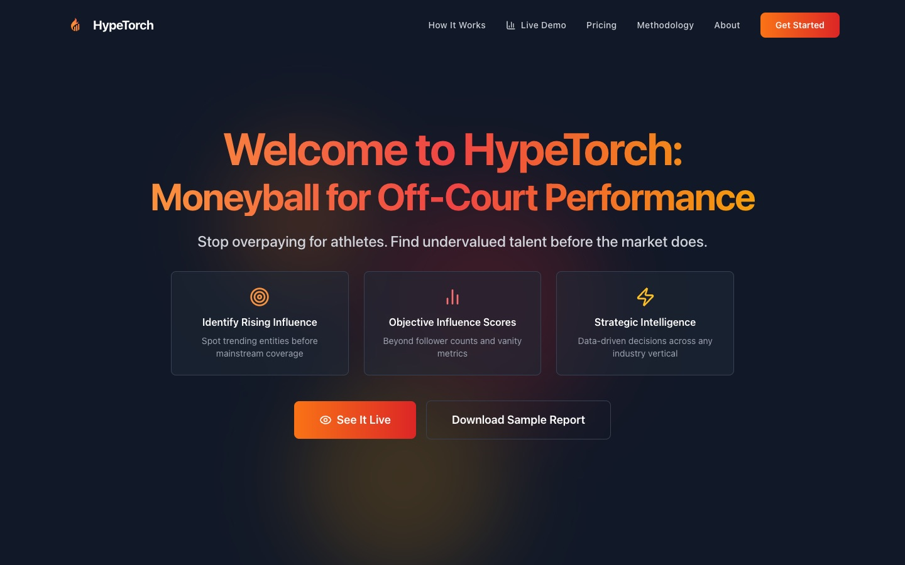

HypeTorch
Combines podcast mentions and talk time with Wikipedia views, Google News and Google Trends into one influence score, JORDN. Two companion scores, RODMN and PIPN, build on it to measure sentiment and popularity relative to social media reach.
Problem
Influence is still measured with old-school counts: impressions, likes, follows. Those show reach, not how much people actually care about someone.
How it works
Podcasts + Wikipedia + Google News + Trends → weekly pipeline → JORDN · RODMN · PIPN → REST API

- Status
- Live
- Role
- Solo
- Stack
- Python · FastAPI · Postgres